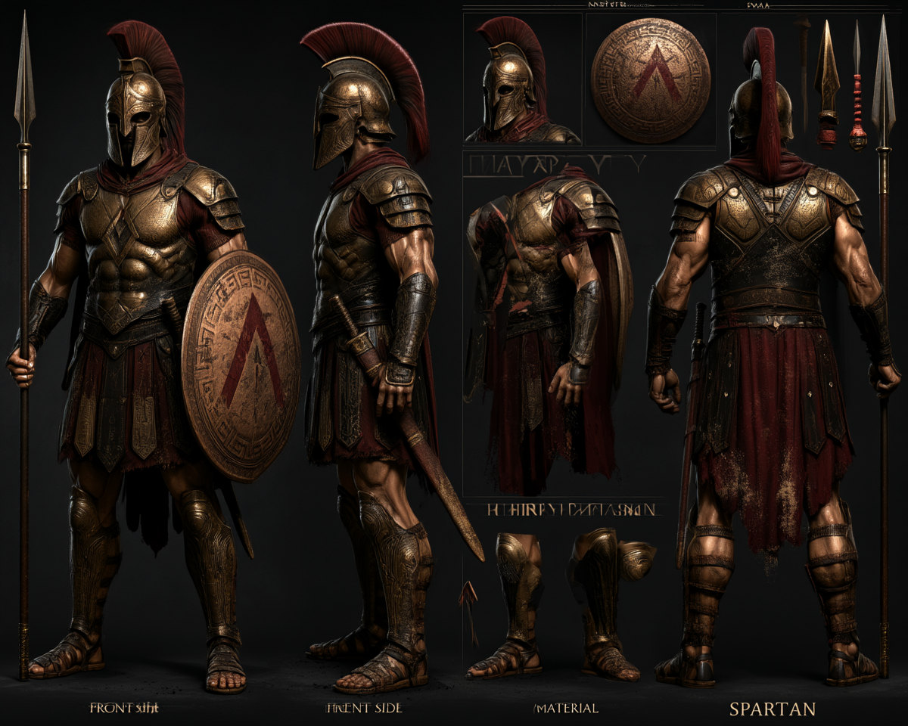
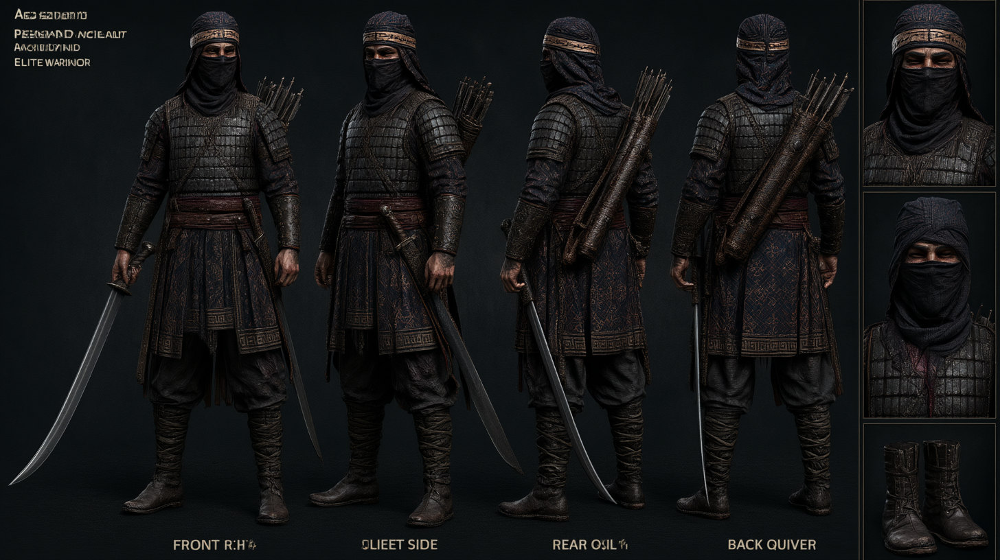
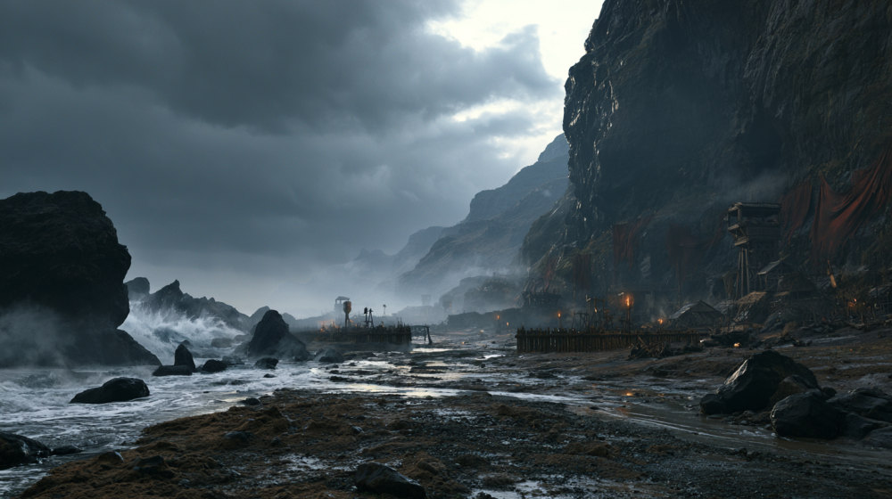
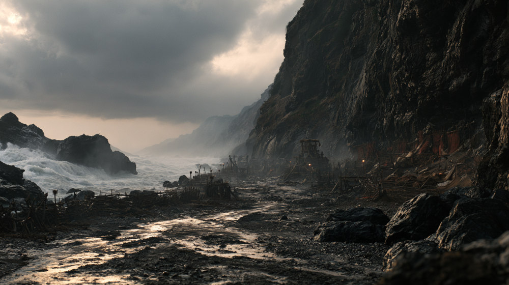
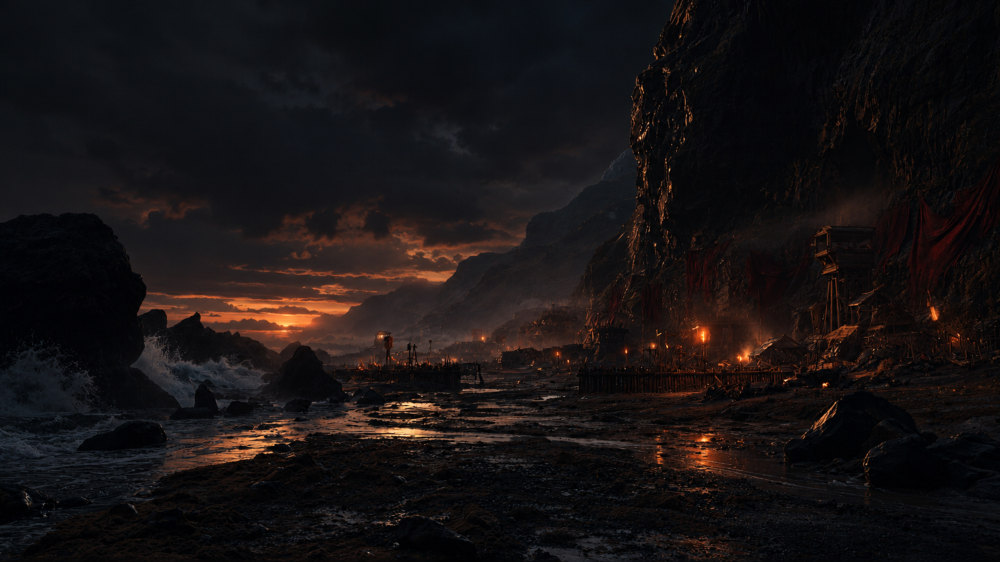
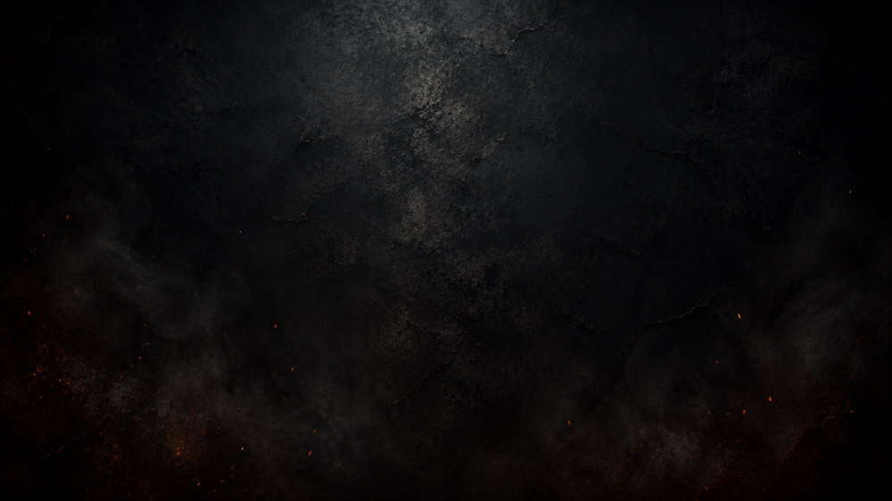

İki ordu, tek bir kıyı
Her iki taraf için önce çok açılı karakter sayfaları üretildi: bronz zırh ve kırmızı pelerinli hoplit, karşısında siyah pullu zırhlı, maskeli Pers okçusu. Ardından fırtınalı bir Akdeniz geçidi farklı ışık koşullarında kuruldu; bu referanslar her sekansta karakterlerin ve mekânın tutarlı kalmasını sağladı.



